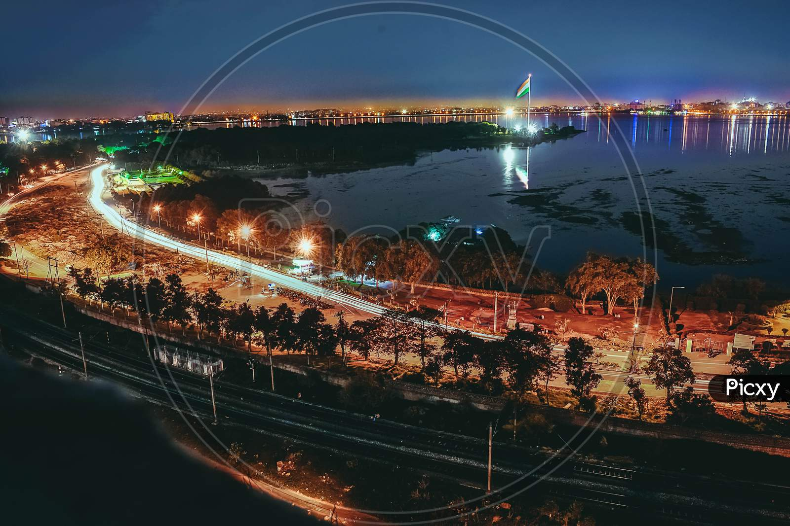
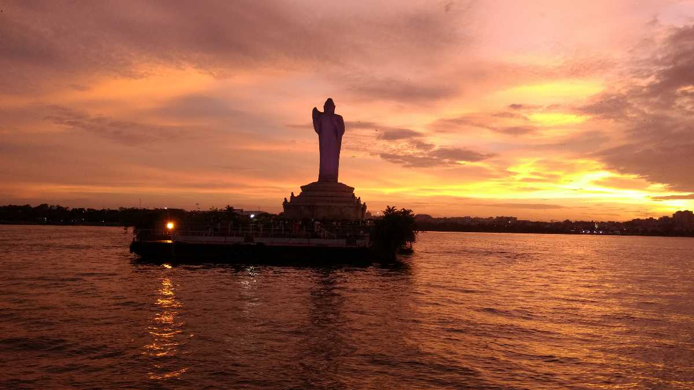
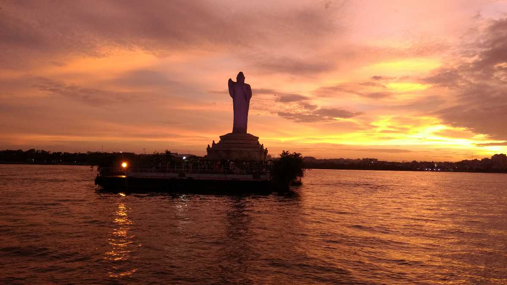

Tank Bund Images
Tank Bund has a rich and fascinating history that dates back to the 16th century.
It was built by the Qutb Shahi rulers as a dam to store water from the Musi River for irrigation
and drinking purposes. The dam created a large artificial lake, which was named Hussain Sagar
after Hussain Shah Wali, a sufi saint who helped in its construction.

 
